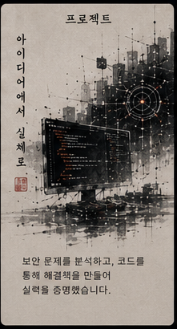

10TH
Grade 10
A strong academic foundation that gave me the discipline to keep learning independently.
9.5 GPAThe Security Builder.
That’s Varun.

Building defensive security tools with Python while learning networking, Linux, ethical hacking, and threat detection.
My academic progress and verified courses mark the path I’m taking toward cybersecurity—one practical step at a time.
A strong academic foundation that gave me the discipline to keep learning independently.
9.5 GPAFocused study and consistent work across every subject.
98%Completing school with a result that reflects patience, consistency, and attention to detail.
97.9%CS50’s Introduction to Programming with Python from Harvard University / CS50.
The TryHackMe Pre Security learning path covering core computer, networking, web, and security foundations.
Three projects that show how I learn: build the tool, test it in an authorized environment, document the result, and make the work easy to inspect.


My direction is simple: strengthen the fundamentals, build useful defensive tools, practice only in authorized environments, and turn every project into proof of progress.
Want to connect?Let’s Talk ↗Art trains the same skills I value in security: patience, observation, accuracy, and attention to what others overlook.
Character, contrast, and expression.

Code and architecture in ink.
Scale, atmosphere, and direction.
Structure, silence, and detail.
Study computer science, strengthen Linux and networking, practice in controlled labs, and develop the judgment required to help build safer systems.
Keep expanding my defensive-security projects, participate in beginner CTFs, document what I learn, and contribute work that other learners can understand.
DRAG / SCROLL